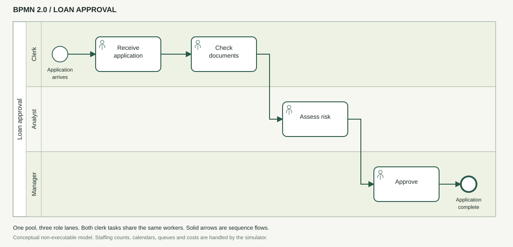

Receive application
Register the incoming case.
One loan application. Four tasks. A limited team.
Explore how the right people in the right place change the whole process.
Where does one more person
make the biggest difference?
ORIGINAL C++ REFERENCE EXPERIMENT
Clerks handle two tasks using the same worker pool. Every application must complete all four steps, in order.
Register the incoming case.
Verify the required information.
The longest service task.
Complete the application.
Simplified BPMN-style sequence · Fixed role skills · FCFS ready-time scheduling · 8-hour daily shifts

Reference workflow: thin circle = start, rounded rectangle with person marker = user task, thick circle = end. Solid arrows show sequence. Both clerk tasks share a staff pool. This conceptual model matches the simulator's route; staffing and calendars are configured in the simulation, and scenarios keep this same route.
Start with the C++ reference experiment, or create a new scenario and simulate all 125 teams in your browser. Same workload for every team; no made-up results.
Click a point to inspect its team. Lower and further left is better. The line joins the exact Pareto choices for the active budget.
Share of staffed working time used, through the final completion.
NSGA-II looks for a diverse set of nondominated solutions. For this small example, enumeration lets us verify the result exactly.
We compared the search output with all 21 budget-feasible allocations. Full recovery is verified for this run; NSGA-II is a heuristic and does not guarantee this on every problem.
No evaluated alternative is at least as good on both objectives and strictly better on one. A Pareto frontier offers choices; business priorities determine which one to use. “Balanced” here minimizes normalized distance to the ideal cost-time point across the returned frontier.
These are illustrative inputs, not bank data. There are no weekends, rework, branches or individual calendars. Arrivals are exponential and task durations are gamma-distributed. Elapsed cycle and waiting times include closures before tasks; cycle also includes closures during service. Staffing cost covers a fixed 20-day plan, even when clearing the backlog takes longer. Independent repetitions and real logs are needed for stronger conclusions.
The C++ code implements a fixed workflow, discrete-event simulation, NSGA-II and exact validation. The original experiment explores saved C++ outputs. New scenarios run a JavaScript discrete-event simulator with equivalent queue and calendar rules, an independent seeded random generator, and exhaustive evaluation of 125 allocations. New scenarios do not run NSGA-II; their frontier is exact for the sampled workload. Next: on-demand candidate evaluation for larger searches, BPMN import, richer calendars, realistic backlog costs, real event logs, and comparisons with hill climbing or reinforcement learning.
Present the model. Explore the trade-off. Defend the assumptions.